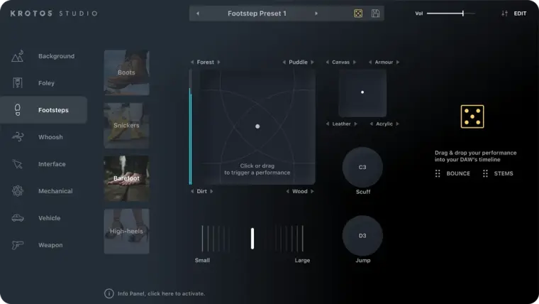
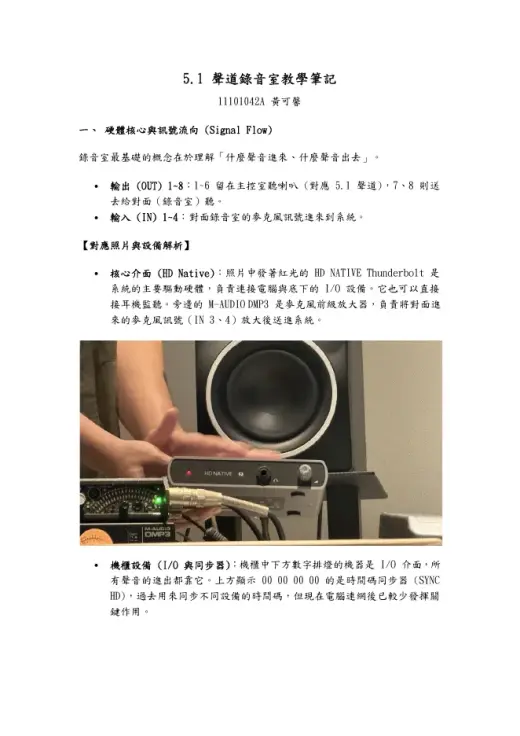

ElevenLabs
以語音合成與聲音置換支援 ADR 練習，讓學生比較原始配音、AI 置換與表演可信度之間的差異，同時納入 AI 語音合作條款與模型刪除規範。
114 學年度第二學期｜義守大學影視系專業選修
以 5.1 環繞錄音室為核心場域，串接觀影分析、LLM 思考協作、ElevenLabs ADR、Suno AI 配樂、Krotos 音效設計與 Pro Tools 混音，將 AI 工具放回電影聲音工藝的完整流程中檢驗。
COURSE INTENT
本課程由陳嘉暐老師授課，重點不只在工具操作，而是訓練學生從劇本、場景、情緒與空間出發，規劃人聲、音效、環境音與音樂如何共同服務影像敘事。
以語音合成與聲音置換支援 ADR 練習，讓學生比較原始配音、AI 置換與表演可信度之間的差異，同時納入 AI 語音合作條款與模型刪除規範。

以劇本情緒分析、音樂標籤設計與反覆生成，訓練非音樂背景的影視創作者把情緒曲線轉譯為配樂語言。
透過環境音生成與直覺化擬音表演，縮短尋找素材的時間，將課堂重心移回「聲音如何成為角色」的設計判斷。
LEARNING PATH
課程以五個階段推進：先讓身體感知不同聲道與空間，再進入 AI 工具、聲音劇本拆解、錄音室實作，最後以《鋼琴課》片段進行聲音重製、AI 標注與反思。
從《大藝術家》與多部學生作品出發，讓學生比較默片、Stereo 與 5.1 聲場的敘事差異；課堂練習也同步導向畫外空間、距離與聲音來源的判斷。
以畫外聲音建立空間深度，練習觀眾看不見但能被聲音引導理解的敘事資訊。
學生以 LLM 輔助觀影心得與聲音觀察整理，同時開始接觸語音置換短影音，從「文字如何描述聲音」前進到「聲音如何改變角色」。
透過短影音格式快速測試 AI 聲音的辨識度、角色感與敘事效率。
導入 Suno、ElevenLabs 與 Krotos Studio Pro，讓學生理解 AI 產出必須回到剪輯、同步、情緒曲線與混音判斷中檢驗。
帳號使用檢核 Suno 分析顯示學生會以專案、情緒類別與版本重製建立工作區；課程據此把 Prompt 設計、版本命名與素材來源記錄納入實作要求。
把 AI 生成音樂放入影像脈絡中測試，理解情緒標籤、節奏與畫面剪輯之間的關係。
學生進入 50208 環繞錄音室，進行 ADR 人聲配音與 Foley 實體擬音，學習麥克風距離、同步點、表演力與錄音室工作秩序。

課堂以 Krotos Studio 的 Footsteps 模組示範 AI 腳步聲，再和現場錄製的真實腳步聲比較。討論結論是：真實 Foley 的自由度與完成度較高，能依照演員動作、材質、距離與情緒做更細緻的控制；但在人力不足、無法安排完整擬音錄製的情況下，AI 腳步聲仍是一個能快速解決問題、補足製作缺口的選項。
課程教材來源 高雄市電影館 2021 年電影教育種子教師單元二教材；實作片段採 2018 年高雄拍補助短片《鋼琴課》。
保留學生現場配音的表演質地，作為後續 AI 置換與聲音可信度比較的基準版本。
學生整合 AI 產出、現場錄音與 Foley 素材，完成影片片段的全面聲音重新設計；課堂也以 Dry / Wet 效果器比例作為混音判斷練習，讓學生比較原始聲、處理聲與最終聲場之間的差異，並在片尾清楚標示 AI 音樂、AI 語音或 AI 音效的實際用途。
課程教材來源 延續高雄市電影館 2021 年電影教育種子教師單元二教材，以 2018 年高雄拍補助短片《鋼琴課》片段作為期末聲音重製素材。
以 AI 語音置換處理同一段素材，讓學生從音色、口氣、同步與倫理規範四個層面進行討論。
SELECTED STUDENT NOTES
以下選入 3 篇具代表性的學生筆記：一篇由老師錄音室教學轉錄稿整理成高品質 5.1 技術筆記，一篇呈現從 2.0 到 5.1 的觀影理解轉換，一篇則把錄音室聆聽、社會議題與聲音技術連在一起。

這篇筆記以老師錄音室教學轉錄稿為基礎，將口語講解轉化為可複習、可操作的技術文件，整理錄音室硬體、訊號流、監聽控制、DaVinci Resolve 5.1 設定、粉紅噪音校準與 Cue Bus 對講流程。
這篇心得從元宇宙製片場的觀影經驗出發，將 5.1 聲道理解為安排注意力、引導情緒流動的聲音語法，並以三部作品對照聲音如何承載壓迫、成長與家庭修補。
這篇線上心得從《白色隧道》《一點一滴的死》《白蟻》預告片、《雄影》與《波希米亞狂想曲》切入，特別能把聲場技術、議題理解與觀眾身體感受整合在一起。
50208 SURROUND STUDIO
錄音室提供完整 5.1 聲道監聽配置，包含 L、C、R、LS、RS 與 LFE，學生能直接觀察喇叭配置、混音位置與輸出結果如何改變觀影經驗。
AI 音樂來源追溯
課程提供學生使用 Suno 與 ElevenLabs 帳號，但要求每一次 AI 生成都回到影像需求、版本迭代與片尾揭露。這項訓練延伸到金種子影展，也就是本系期末全系成果影展，學生作品進入公開放映脈絡時，AI 音樂與音效來源必須清楚標注，並能對應授權帳號與生成月份。
依據「AI 音樂生成工具應用：創作統計報告 20260609」，學校專用 Suno 帳號 isufilmtv_team1 的學生創作量已突破 1,000 首。工作區名稱顯示學生並非零散試玩，而是以影像專案、情緒類別與版本重製為單位進行反覆測試。
ElevenLabs 變聲器分析則顯示，2026 年 4 月至 6 月的語音實作已從單純變聲前進到角色建立：學生會依據科幻、都市喜劇、親情寫實與校園文本，選擇沉穩男聲、在地日常聲線、長者女聲或自訂青春音色。
當 AI 音樂進入影片片尾，它就不再只是課堂工具，而是作品公開呈現的一部分。學生必須能交代素材來自哪個工具、用在什麼功能、使用哪個學校授權帳號、由誰做最後剪輯與混音判斷，才算完成聲音創作者應有的專業責任。
因此課程把「Prompt 生成」「版本選擇」「音樂同步」「片尾 credit」連成同一個流程：生成不是終點，能追溯、能標注、能解釋取捨，才是成果。
AI Tools / AI 協作工具 - Suno AI vX.X：生成片尾曲〈曲名〉音樂 / AI vocal performance - ChatGPT：協助生成〈曲名〉歌詞初稿，由 XXX 修改定稿 - Gemini：協助歌詞發想 / 翻譯 / 字幕草稿 - ElevenLabs：生成音效素材，後由 XXX 剪輯與混音 - Runway / 即夢AI：生成或處理哪些影像素材 Music / 音樂 - 〈AI 生成曲名〉：AI-Generated Music via SUNO，Lyrics by XXX，Prompt Design by XXX - 若學生負責作曲，才可寫 Composer by XXX；若音樂由 AI 生成，不可寫 Music by XXX 偽裝為唯一作者 - 〈授權曲名〉：Artist XXX，Licensed via Artlist / Envato / Pixabay - AI 音樂若使用學校 Suno 帳號，請另列 Licence 帳號與年月
例如 Suno AI、Suno AI V4.5、ElevenLabs AI，並補上學校授權帳號與生成月份，不以模糊的「AI 協作」取代具體來源。
分清楚音樂生成、歌詞生成、音效生成、授權素材與人工剪輯混音，避免把所有聲音工作混成一筆。
金種子影展作為本系期末全系成果影展，片尾文字必須讓觀眾、評審與後續查核者能看懂 AI 工具在作品中的實際位置。
CLASSROOM DOCUMENTATION
AI REFLECTION SURVEY
依據課程資料夾中的期末問卷 CSV 匿名彙整，共 15 份有效回覆。分析重點放在學生如何使用 AI、如何評估 AI 聲音品質，以及對未來混音師角色的理解變化。
回覆顯示，AI 已實際進入學生的期末個人混音作業：15 位回覆者中有 14 位表示使用 AI 工具。學生最常提到的價值不是「取代創作」，而是快速產生素材、提供初步想法、節省錄音或搜尋素材的時間，讓創作者能把更多精力放在篩選、同步與混音判斷。
前六週的場域聆聽訓練也有明確回饋。14 位學生認為在不同空間看電影、聽電影，有助於判斷 AI 生成結果是否真實、自然，代表課程不是直接把 AI 當捷徑，而是先建立聽覺標準，再用這個標準檢驗 AI 產物。
限制面則集中在控制力與創作主體性：最多人指出 AI 難以精準控制輸出的細節與風格，其次是擔心過度依賴、削弱個人創作能力。這也呼應課程最後的反思：AI 能加速聲音生產，但電影混音師仍必須負責情感判斷、素材取捨與最後的藝術決策。
多數回覆聚焦在「快速生成音樂」、「提供配樂參考」與「在靈感不足時刺激想法」，尤其適合作為影像配樂初稿與情緒方向測試。
回覆集中在「替換人聲」、「快速生成不同聲音」與「聲音角色轉換」，學生特別能感受到語音置換對 ADR 練習的幫助。
多選題，分母為 15 份有效回覆。
15 份有效回覆中，沒有學生給 1 或 2 分；分布集中在 4 到 5 分，顯示學生整體認為 AI 學習對未來發展有正向幫助。
學生並未把 AI 理解為單純替代人力，而是把混音師看成更需要判斷與整合能力的角色。
FINAL REPORT VIDEO
本課程成果報告影片以嘉暐老師分身配音呈現，整理本學期電影混音創新教學的課程設計、AI 工具導入與學生實作成果。